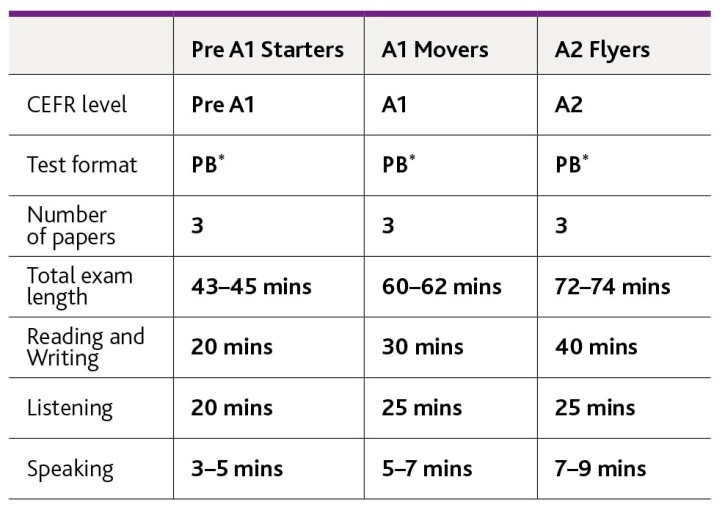

cambridge knowledge Partnership Programme
With Cambridge Assessment English, SETR's Skills Edge is committed to bringing brighter thinking from around the world into the classroom. Dedicated to better learning, we work alongside educators and learners, providing teachers and students with accessible, inspirational learning resources. With SETR's Skills Edge, we continue to unlock the potential of children of this world and help them become better citizens. In an ever-changing global educational environment, we look forward to innovating, inspiring, and leading the way in transforming education. To ensure that young learners and professionals are better equipped in all four language skills – Listening, Speaking, Reading, and Writing, we empower our educators with innovative teaching pedagogy through globally acclaimed Continuous Professional Development and Training Programs.
To know more

About Cambridge Assessment English
Part of the University of Cambridge, they help millions of people learn English and prove their skills to the world. For Cambridge English, learning English is more than just exams and grades. It’s about having the confidence to communicate and access a lifetime of enriching experiences and opportunities. With the right support, learning a language is an exhilarating journey.
Your path to learning English, step by step
Cambridge English Qualifications are in-depth exams that make learning English enjoyable, effective and rewarding, both for young learners and professionals.
Their unique approach encourages continuous progression with a clear path to improving language skills. Each of our qualifications focuses on a level of the Common European Framework of Reference (CEFR), enabling learners to develop and build speaking, writing, reading and listening skills.
The Cambridge English qualifications are based on research into effective teaching and learning. They motivate people of all ages and abilities to learn English and develop practical skills for the real world.
Whether learners and educators are planning to live, work or study in their own country or abroad, these qualifications prove they have the English language skills to succeed.
Range of Cambridge English Qualifications
| Pre A1 Starters, A1 Movers, A2 Flyers These three exams are for young learners in grades 3 -5. They build young learners’ confidence and lay the foundations for future success in English. All our exams for young learners are fun, colourful and activity based, motivating children to learn. |
 |
| A2 Key for Schools Suggested for Grade 6, this qualification helps learners to fully develop their everyday written and spoken English at Level A2. The exam builds on the skills students have achieved at A2 Flyers. |
|
| B1 Preliminary for Schools Recommended for grades 7-8, this is an intermediate-level qualification for students who have mastered the basics of English and now have practical language skills for everyday use. |
|
| B2 First for Schools This qualification is a great way for learners to prepare for higher level exams, and shows they have the language skills needed to communicate confidently in an English-speaking environment. |
|
| C1 Advanced Suggested for grades 9 -10, this is proof of high-level achievement in English and the ideal qualification for students preparing for university or professional life. |
 |
Cambridge English Scale
Cambridge English Qualifications provide reliable assessment on the Cambridge English Scale with detailed information on achievement. SETR's Skills Edge caters to qualifications from Young Learners Pre A1 Starters, A1 Movers & A2 Flyers to First for Schools for the academic year 2023-24. For educators who teach English and teach in English, it will cater to the TKT (Teaching Knowledge Test) exams.
The language skills of students and educators are assessed by external examiners who are certified by Cambridge English, ensuring a reliable evaluation process.